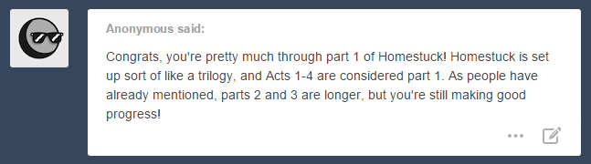
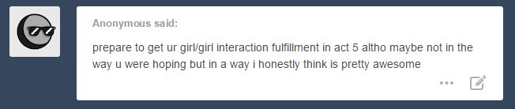
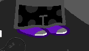

Hivebent. That’s really all there is to say on the matter.
This is super extra late and I am super extra sorry so without further ado LETS END ACT 4 ONCE AND FOR ALL not that this means I will blabber less than usual

Yikes. Why are all of my posts starting with blood and slaughter lately?? What the heck!
And WV is the last one standing. Because he didn’t fight at all smh
You know, Jack sparing him was more of a cruelty than anything. Also WV, I’m not saying you should seek refuge immediately but… yeah, you should seek refuge immediately or a meteor is going to make a pancake out of you.
YEAH!!!! Rip it to shreds!!!
I’m blaming it all on this fucking puppet because honestly????????
Think about it! There have been two puppets of which origin we know absolutely nothing. This one and Lil'Cal. Yes, Cal is a paradox clone of itself BUT that only explains the way it ended up on earth with Bro. He supposedly changed the Derse shirt with the orange one. (Yes, this means Bro plays dress up with his puppets. Yes, this shocked me too.) We thought there were two versions of Cal but there was only one all along. The question is where did the fake dream self version even come from?? It’s a mystery. Exactly like the puppet that WV is currently ripping to shreds! They just appeared one day in John’s and Dave’s towers! And you know what else the two abominations have in common???!!! They haunted the poor kids’ dreams! Okay, it wasn’t stated that clown imp/Jack Noir/whatever that thing is supposed to represent haunts John’s dreams BUT!!!! The first time John got away from it for a couple of minutes he almost FREAKING WOKE UP! And the second time he DID actually wake up! If it wasn’t for that thing John would have woken up AGES AGO and Jade wouldn’t have died!!!!!!! So the puppets’ purpose could be delaying the kids’ awakening!! The question is WHY!!!! There is something extremely suspicious going on WAKE UP AND SMELL THE COFFEE AMERICA!!!!!!
I sounded like a conspiracy theorist up there.
I BLAME T H E P U P P E T
JADE’S SACRIFICE WAS SO FUCKING NOBLE SHE RENOUNCED TO HER LIFE ON PROSPIT AND TO THE KINGDOM AND THE PEOPLE THAT WERE HER EVERYTHING SINCE SHE WAS LITTLE TO SAVE JOHN THAT’S SO INCREDIBLE SHE WAS PROBABLY SO FUCKING SCARED SHE IS SO YOUNG AND YET SO BRAVE OH MY GOD
JOHN PLEASE DON’T MAKE THAT FACE I DON’T WANNA CRY
REMEMBER SHE IS ALIVE ON HER ISLAND
Okay she was falling to her death but i am pretty sure we can trust bec to take care of that i mean, cut some slack to the omnipotent dog
<!doctype html>Also I can’t shake the feeling that Jade’s death was totally meant to be a punishment??? I don’t even know. She had been waiting for years for him to wake up. Sitting by his freaking bedside. And she dies right before John wakes up, she dies sacrificing herself for him. And meeting her friends was the thing she looked forward to the most. She has been extremely sheltered for her whole life. This game is fucked up. You can’t fucking punish a little girl like that. I hope I’m completely wrong and this is not some sort of paradox space karma or something.

A boy finds a dead friend. Her ring, recovered.
How does he know that the ring is actually important like……. did CG tell him?? I don’t remember shit, I stopped reading for 20 days and I already feel like I’m forgetting everything WHY
Also she was hit by the Prospit moon’s I don’t THINK she should have left a body in such good conditions behind. Actually I didn’t think she would have left a body behind at all.

The boy sees himself in a cloud. His destination, revealed.
YOU KNOW WHAT THIS MEANS. John is completely on his own. With an objective to pursue. Bless the cloud mirages. We will see for how much time he is able to stay alive and hold his ground without supervision. His last record was five minutes, I believe? Man, he really outdid himself that one time. #soproud
Is there only one castle on Skaia though?? I don’t think so?? How will he know which on is the right one?? I’d say he could ask one of the locals to help him out and show him the way but. They are not exactly in the conditions to do so. In fact they are not in the conditions to do anything anymore. Like ever. RIP. He could ask WV. But first I think it would be best to leave him alone after all he has been through. Second he is busy reducing evil looking puppets to shreds so… Also he has to embark the next meteor to Earth like ASAP.

Holy crap, those rags were GOLDEN before. For how long had she been wandering through the desert when we first saw her?? Collecting the red mailbox flappy things. Walking through the remains of what had once been civilization, and yet not giving up on the symbol of what for PM was the foundation of it? Mail.
A mistress becomes a mendicant.
One liners like these really get to me for some reason?? …QUICK QUICK GOTTA CLICK ON THE BLUE ARROW BEFORE I START FEELING AGAIN
the recent past is recalled…


HOLY HELL.THIS PANEL IS NOT HELPING TO STOP ME FROM FEELING. QUITE THE OPPOSITE. One of the very first things PM did on screen was abjuring the hell out of swords and the idea of ever using one. She said she would have never resorted to it nor violence in general. :(
A communication device is borrowed. A rendezvous, arranged.
wAIT WHAT.
with Jack??

I had completely forgotten about her deal with Jack Noir?? What will he even do with those crowns now. Does he think that the Queen and King are dead?? Is she giving those to him so that he doesn’t seek them out to kill them both?? That was the initial objective, I think??


Wipe that creepy ass grin from your face. She didn’t betray her kingdom for you. Quite the opposite. Maybe… Maybe he just takes pride in the fact that he got her to kill someone?? To have blood on her hands I HAVE TO STOP THINKING AND JUST READ THIS THING

The boy finds the castle. His courier’s path, crossed.
ALREADY??????????? WHAT???????? OOOH
Oh wait. this is hours later. I thought… I thought that there would have been some kind of quest to reach it?? Some obstacles?? So much for getting to see John getting shit done on his own. Ugh.


PM, That was rude. He has nothing to do with the awful shit that is happening to you and your kingdom, you know. Also he is… supposedly… mourning??? Jade??? He recovered pretty quickly. In fact he didn’t need to recover at all because he wasn’t really fazed by it in the first place??

OH NOOOOOOOOO FUCK FUCK FUCK IT’S JADES LETTER
The package is opened. Letters, read.
More than one, apparently.
> John!
Did Jade just capitalize a name. What is this madness. No wonder the world is ending, Jade just CAPITALIZED A WORD.

THAT’S NOT JADE
THAT’S DEFINITELY NOT FUCKING JADE
WTF WHO ARE YOU?????????????
WAIT WAIT WAIT WAIT WAIT
I CANNOT
WAIT
OH MYGOD
PENPAL
JADE’S PENPAL
THE ONE SHE SAID SHE HAD BEEN WORKING WITH
THIS SURE AS FUCK IS NOT AN EXILE
ITS A KID
A FRIGGING KID
NOT A TROLL
I REPEAT
NOT A TROLL
TROLLS USE PESTERLOGS NOT FREAKING LETTERS
YOU DO NOT SEND INTERGALACTIC LETTERS
THIS IS A KID
A HUMAN
HUMAN
THIS IS NOT A DRILL
PUT ON YOUR SEAT BELT BECAUSE
I BELIEVE
WE MAY BE IN THE PRESENCE OF
ONE OF THE BEAUTIFUL MYSTERIOUS AND LEGENDARY MEMBERS
OF THE EIGHT PLAYERS SESSION HOLY SHIT HOLY SHIT HOLY SHIT
I WAS FUCKING LOSING HOPE
I THOUGHT THAT FUCKING MAP IN THE LAB MEANT SOMETHING ELSE OR WAS JUST????????
NOT INDICATORY OF ANYTHING IN PARTICULAR
JUST AN INCIPISPHERE THAT WE AND THE STORY HAD NO BUSINESS TO DO WITH?????
AN ELEMENT THAT HAD NO DEEPER MEANING NOR DID IT FORESHADOW ANYTHING
HAHAHAHAHA YEAH RIGHT
LIKE THAT COULD HAPPEN IN THIS WEBCOMIC
HAHAAAAAAAAAAHAHAHAHAHAHAHA
OKAY I WILL CALM DOWN
OH MY
OKAY LET’S READ LET’S READ
John!
From what i heartell youve been through a bit of an adventure by the time youre reading this.
OH MY SHIT YOU BETTER BE ONE OF THE THIRD SESSION PLAYERS OR I WILL BEAT YOU UP
I WILL FIGHT YOU
Thats so great. I love adventure and i would bet my bottom boonbuck you do too.
YOUR BOTTOM WHAT???????????????????????????????’
CONFIRMED
CONFIRMED
FREAKING SBURB PLAYER HERE
ARE THEY ALREADY PLAYING THOUGH?????????
HOW WOULD THEY KNOW WHAT A BOONBUCK IS OTHERWISE
DOES THE THIRD SESSION ACTUALLY CHRONOLOGICALLY HAPPEN BEFORE THIS ONE
IS IT ACTUALLY THE SECOND SESSION
IT CAN’T BE THE FIRST BECAUSE THE TROLLS BEGAN PLAYING MONTHS AGO
AND YOU KNOW
THE GAME BRINGS METEORS ….“and fire and stuff” Cit. John Egbert
I think we are birds of a feather john.
THAT’S QUITE THE ASSUMPTION THAT YOU ARE MAKING. You should know that while I often insult John and threaten him physically that is only my way of showing affection. Therefore he still is my favorite and also a top-notch character. So if you just show up and happily announce that you two are similar you will have to hold up to that claim.
I am pretty eager to meet you. Oh yeah i should have mentioned we are going to meet some day.
SAY WHAT
THAT’S IMPOSSIBLE I THINK
OR APPARENTLY I THOUGHT
THEY ARE STATING IT AS A FACT SO
BUT STILL WEIRD
BECAUSE
I MEAN
EACH SESSION HAS THEIR OWN DIMENSION
HOW DO YOU
DO THAT
LIKE MEET
HOW ARE THEY EVEN SO SURE?????????? DID THEY SEE IT OR WHAT??
OKAY BUT WHY EVERY TIME A NEW CHARACTER SHOWS UP THEY GOTTA MAKE ME ASSUME THAT THEY ARE PSYCHIC OR SOMETHING
LIKE I KNOW GC HAS ALREADY BROUGHT UP MEETING EACH OTHER ETCETERA BUT I THOUGHT THAT WAS IN ORDER TO MAKE HER DEATH THREATS MORE EFFECTIVE
BUT THIS ONE IS CERTAIN THAT IT WILL HAPPEN
LIKE HOW
HOW DO THEY KNOW AND HOW IT WOULD HAPPEN
THERE MUST BE SOME KIND OF CONNECTION BETWEEN THE SESSIONS LIKE
I MEAN… THE CLOSEST WE CAME TO SOME SORT OF CONNECTION WAS THROUGH INTERNET SERVERS WHOOPS Sorry, forgot the caps lock on. And it was the Furthest Ring. Though it is more of a connection through servers and internet than anything else. Derse’s moon is supposed to orbit into it but it never happened nor has it been ever been mentioned. So perhaps the Furthest Ring is not actually physically accessible? If it was though, that would be definitely interesting??? Because on more than one occasion (and by that I mean, on two occasions, wow) it has been implied that the Furthest Ring unlike Skaia is the same in every session. It is like… A neutral ground. Only one version of it, probably surrounding every Incipisphere that has ever come into existence.
And Rose says:
“I have used a spell to rip this walkthrough from Earth’s decaying networks, and sealed it in one of the servers floating in the Furthest Ring. The gods may disperse the signal throughout the cosmos as they wish. Perhaps it will be of use to past or future species who like us have been ensnared by Skaia’s malevolent tendrils.”
Yeeeeeeeeeaaaaah. It does seem like the Furthest Ring may be a neutral ground?? Doesn’t it sound like a thing that she is implying?
And when it was first introduced in the Grimoire the book talked about different galaxies and ony one Furthest Ring. Much like Rose now referrers to different cosmos but still only one Furthest Ring in her FAQ.
Like while every session has its own Skaia, the Furthest Ring is the same for every session. There is only one and that’s it. Surrounding all the Sburb sessions! If so people from a session could meet up with people from another one in the Furthest Ring! It would be while they are sleeping, because otherwise how do you get there? Derse players are closer to it even. They could just… sort of float in there. And just avoid the Horrorterrors, I guess?? If you can even do that. Because they are terrifying and also sing according to Dave?? HEY YOU KNOW WHAT THIS MEANS
SINGING
HELLA RAD SLEEPING DANCE PARTY WHEN THEY MEET UP
(BECAUSE OBVIOUSLY IF JOHN AND GREEN TEXT KID ARE GONNA MEET SO IS EVERYBODY ELSE)
OPTIONAL KARAOKE WITH A HORRORTERROR OF YOUR CHOICE
IF YOU HAVE THE GUTS TO DO IT AND ALSO NO SENSE OF REGARD FOR YOUR OWN LIFE
HEY I WOULD SAY ROSE FITS THE BILL WHATCHA SAY
ROSE WILL BE GETTING HER SINGING ON
DAVE WOULD JOIN FOR THE IRONY
JOHN AND JADE WOULD JUST STAY HUDDLED IN A CORNER TOGETHER BECAUSE THEY ARE TERRIFIED BY WAIT JADE IS DEAD
AWWWWWWWWWWWWWW
BUT WHY
CMON
AND THE TROLLS TOO BUT THEY DON’T REALLY MATTER BECAUSE IT WAS NEVER STATED THAT THEY HAVE TO MEET. GC SAID IT LIKE AN EVENTUALITY LIKE “IN THE CHANCE THAT WE MEET” “IF WE EVER MEET”. IT’S WAY DIFFERENT FROM “WE ARE GOING TO MEET SOME DAY”
I guess that’s not it then?? I mean if people are really going to meet up Jade’s death would mean that she will never get the occasion to also join. That’s kinda really unlikely. Well, fuck. I gotta think of something else. I don’t know… excluding Jade from it, especially since she was the one that has known people from other sessions for years….. sounds kinda like a shitty move. Soooo… unlikely.
I have read like two lines of this letter and wrote 731289390 words about it. Moving on.
I hear you like movies is that right john? I love movies too. Have you ever seen weekend at bernies? So friggin hilarious.
Can’t I have ONE session’s protagonist with a decent taste in movies?? I’m not asking for much. Weekend at Bernie’s. It’s the one with the dead boss and the two idiots who drag him around, no? I swear the second part of the movie is just dragging and tossing the body around. Like WE GET IT. HE IS DEAD. Which is hilarious because they are trying to convince the others that he is alive so?? Hey, they are right. It IS hilarious. Hilariously bad.
ALSO JOHN!!!!! Get a load of this!!! You have found another victim to subject to Con Air and Nicolas Cage. They just keep showing up. They are asking for it. Your time has come. Turns out that John’s quest has nothing to do with his land. John’s true quest as an Heir of Breath is to redeem Nicolas Cage’s name and all the movies he has starred in. Will he succeed?? Find out in Act 5!!!
And no, I won’t stop making jokes about John’s role until I actually get at least some kind of idea of what he is supposed to do, sorry.
Its hard to talk to jade about movies because she doesnt really know about movies but im sure you know that. Boooring. Ha ha just kidding jade you know i love you and i think youre a blast.
OH MY FRIGGING
THIS KID IS A CUTIE. Who are you even talking to?? What a nerd. Did you think Jade would have been reading your letter over John’s shoulder or something?? Or that she would have checked it before sending the package to see what you had been saying about her?? Mmmmmh. Maybe they were. Maybe they are in cahoots. Where does this kid even come from. (ಠ_ಠ) This is getting suspicious. John, you have to investigate!! This is your sister we are talking about! You have snooping privileges in her relationships! Especially when they involve a mysterious person that Jade has been knowing for years and seems to appreciate her so much that they feel the need to apologize for an “insult” that she will never even see. Are they a boy or a girl by the way?? Like I have no idea this time. Usually I do get some kind of boyish or girlish vibe??
Okay speaking of jade we spent quite a long time working on this present for you. It was a big team effort. Okay i had to do quite a lot of arm twisting to get her to go along with helping me make such an oddball present for you and so well in advance. But i had my arm sort of twisted myself to get this going in the first place. But then she came around to the idea because she can see the future!
SAY WHAT X2 COMBO????????????????
The one with the idea for the present wasn’t Jade. And it wasn’t even this kid. It was yet someone else who convinced them who then convinced Jade!!! And Jade also took a lot of convincing before getting on board with it. And she got around to do it only because she saw it on Prospit! Jade is the biggest cheapskate when it comes to presents by the way! She didn’t send anything to Rose, saying that she was an “hard shop”… Girl, Rose has a Squiddle on her t-shirt. A SQUIDDLE. You have so many of those things laying around you make piles out of them. JUST FUCKING GIVE ONE OF THOSE ABOMINATIONS TO HER.
Pretty amazing if you ask me. Itll all be clear later. Gadzooks with all this arm twisting ive been getting a good workout. We should wrestle when we meet john. I love to wrestle but i dont get a chance to wrestle with anyone that much. Do you like to get into fisticuffs john? Scrums and what not? Me too.
OH DEAR GODNESS. “Me too”?? That’s… did they…. just assume that John would say yes?? That’s not how letters work oh my gosh. Or maybe this kid is yet another psychic that will turn out not to be really a psychic. You can tell they REALLY are excited about meeting John though, they are trying to say everything and all at once and it’s ridiculous but also pretty darn adorable. And gadzooks….. how……. how do you even talk………. Also they don’t get the chance to wrestle that much??? What the heckie heck! Don’t you strife with your guardian?? Everybody strife regardless of if they want to or not! Even Jade somehow strifes with her guardian. And we’re speaking of a omnipotent spacewarping dog, by the way.
Anyway you should listen to jade from here on out john because she sure seems to know whats best for you. Whatever your adventure throws at you im sure shell tell you you can handle it. She believes in you.
Yeah, she made it clear since the veeeeery beginning. Jade believes in everyone and helps everyone and encourages everyone. She believes in people. :(
There is another page to this letter…
YOU TALK TOO MUCH

I AM SCREAMING
YOU COME INTO MY HOUSE
DEBUNK THE THEORY I AM SUREST OF
DESTROY WHATEVER WAS LEFT OF MY SELF ESTEEM
HOW DARE YOU
…
…….. Okay, but first of all, because why the hell shouldn’t we go over this in order:
I said and I repeat: HOW DO YOU EVEN TALK??!?!? I’ve got two theories about this. The first is that this child lived in a retirement home, spent their days playing monopoly and chatting it up with the elderly. Sure enough after a while the golden-agers began rubbing off on the kid who started talking like they come straight from the 70s and ready to dance to some dandy beats. All that talk about adventure and fisticuffs?? They have simply watched Indiana Jones too many times. They are deluded, dreaming of a life that they cannot have! Second theory: They are stuck in the past!!!Someone help this kid get back in the 21th Century ASAP! We need a time travel rescue mission! Back to the Future style! Whichever option is closer to their reality, this kid needs to be saved!
And now, that I have dealt with the obviously most important and plot relevant detail…..
I AM SCREAMING IT WASN’T THE BUNNY IT FUCKING WASN’T AND I WOULD HAVE BET EVERYTHING I HAVE ON IT BEING THE BUNNY AND I AM SCREAMING “FUCK YOU” IN ALL THE LANGUAGES I KNOW WHICH I JUST REALIZED JUST AMOUNTS TO A LOUSY NUMBER OF THREE LANGUAGES BECAUSE EVEN THOUGH I SPEAK A LITTLE FRENCH I HAVE NO EFFING IDEA HOW TO SAY “FUCK YOU” IN IT WHAT IN THE NAME OF SACRE BLEU IS THIS SHIT
NEVERMIND. You know what??? Nevermind. Gotta be happy with what you have. Which isn’t the bunny because it would have made too much sense and of course Jade hAD TO BREAK THE FUCKING PATTERN AGAIN I SWEAR TO FUCK I AM NOT PISSED I SWEAR Alright, let’s see what we do have.
Quills of Echidna and what the fuck. That’s Jade’s Denizen! Yet further confirmation that the third session players really are already in the Medium?? And they have already made it to the Denizens??? WHAT. Who are you?!?! How fucking strong must you be?? What did they even feed you in that retirement home, kid. Also it seems that two players can share the same Denizen. OR OR OR WAIT. There is also the possibility that those come really from Jade’s Denizen! And through weirdass time travel stuff they have been sent back in time to John! Also they could have been…. somehow alchemized?? Since it is something that belongs to a Denizen! Like the Fear No Anvil! Remember Hephaestus’ hammer?? Oooh, and they better not say they obtained the Quills through “shenanigans” or I will wreck them! Then there is… some sort of gun? Royal gun?! How is any of this stuff useful to John? Why does he need it? Also he already has a strife specibus! He can’t use guns! Only hammers! And that kid said “oddball present” not “oddball presents”! How many things did they fit in there? Because the list goes on! Then a…. Something something Crosshair… I can’t read it. Did everybody just chime in and gave something to John?! Aww, that’s cute. It is… thoughtful of them?! I guess?? That would also make an awful lot of presents, guys stop! you are gonna spoil the kid!
There is another letter from a different author…
It’s pain and tears' Jade’s letter time! Yay! Hahaha.
And of course the Mystery Kid’s letter is not signed. Can’t have characters divulging their name to the wind before they have been properly introduced. Remember when John and Dave outright refused to utter the girls’ names and called them TT and GG?? Because they hadn’t been introduced yet?? They-Who-Must-Not-Be-Named. Man, those were the times. The times in which this story managed to be still ridiculous even if nothing had happened yet, I mean.

Look at those Squiddles nonchalantly sinning in the top right corner…….. Okay at this point you noticed that I’m only trying to delay this.
dear john,
happy birthday!!!!!!! :D
even though its super late and you probably went through a lot of trouble to get it, i really hope this present cheers you up! you looked so sad while you were reading my letter. um… which is to say, the one you are reading now. i can explain!!!
you looked so sad
so sad
???????????????????????????????????
That’s his default expression, Jade. The closest he came to look so sad was when he discovered your body and even then it was more along the lines of “aww, shoot” than actual grief??
you see, when i go to sleep, in my dreams i wake up on the moon of a planet called prospit. by now you must know about this place! i have lived there in my dreams most of my life and i made so many friends there over the years. and you were there too! but you were asleep. the fact that you are awake now i think means all my friends are in trouble. you are awake because it is your job to help them. we will both help them!
…………………..Who is gonna tell her that not only she cannot save anyone anymore but that there is also nobody left to save at all. Jack, you do it. You’re the one who caused it, you are also the one with the responsibility to break it to her and feel guilty as you watch her heart shatter.
about this present! my penpal helped me work on it. he included a letter too! hes really funny and silly, i like him a lot and i think you would too. it took a long time between the two of us.
Mystery Kid confirmed to be a boy who watched Indiana Jones too many times.
and sure the present looks like a fun and completely ridiculous thing to get, but it is also really important! you are getting it exactly when you need it most. maybe thats hard to believe but its true! i saw it happen already. i dont see everything john, and i definitely dont know everything thats going to happen. but when i do know something, i always try to do my best to help people in the future! when im supposed to that is. youll get the hang of it.
I WOULD RATHER BE PUNCHED IN THE FACE SEVERAL TIMES THAN READ THIS FREAKING LETTER. It would be less painful, I swear. She always does everything she can for the ones she cares about, putting others before her own interest and she died for it??? And Jade, John will not “get the hang of it”!! You needed to be here to show him the ropes! You think he is going to pull off all those crazy time loops stunts by himself like you did?? Are you crazy?? He’s just gonna look up to a cloud and go “yep, that sure is a thing that is going to happen in the future” AND THAT’S IT.
john i am REALLY looking forward to seeing you when you wake up!!!!!
PUNCH ME IN THE FACE INSTEAD I SAID
PUNCH ME
DO IT
Like I knew that she really looked forward to it but actually hearing it from her mouth…. (reading it…. from her letter ??? whatever) it’s hard. which is why i was strongly opposed to this letter in the first place. I knew this was going to happen.
its been nice playing with my prospitian friends and all, but also kind of lonely knowing you were in the other tower sleeping and having lousy dreams. :( im not sure where i am when you are reading this but im sure ill make it down to where you are soon! (jeez how did you get down there??? oh well ill find out) i cant wait to fly around the moon with you and show you all my favorite places. itll be so much fun!!!!!!!!! :D
<3
jade
FUCK
EVERYTHING
WHY
DO YOU EXPLOIT MY WEAKNESS
LIKE THIS
WHY MUST YOU MAKE ME CRY
YOU EVIL AUTHOR
YOU
FUCK
I COULD WRITE A FIFTEEN PAGES ESSAY ABOUT HOW THIS IS NOT OKAY

nOOOOOOOOOOOOOO
NO NO NO
SHUT YOUR TEAR DUCTS AND SUCK IT UP
I AM ALREADY CRYING KID
I DON’T NEED YOU TO JOIN
Confession Time: I can’t stand it when fictional characters cry. Like it doesn’t matter if it’s over the death of their three days old new goldfish or over the slaughter of their whole family in the war, I will end up crying as well. It doesn’t even matter if the one crying is my favorite cinnamon roll or the one I hate the freaking most, I will cry. Sometimes I don’t even cry at the characters deaths in a tv show but I sob at the funerals because everyone is crying there?? I’m weird, don’t judge.


A boy’s grief is interrupted. His ring, sought.
oh
I had forgotten
John can only stay alive for so long on his own
He lasted two hours!!!! this was bound to happen!!!
#stillproudofyou

AASJISAOIJDCIEQOFNPWPROOO
AAAAAAAAAAAAAAAAAAAAHHHHHHHHHHHHHH
LOOK AT IT LOOK AT IT
I CANNOT BELIEVE THIS
NOPE FUCK ME
I HAVE BEEN OWNED
FUCK FUCK FUCK
OWNED BY A THIRTEEN Y/O WHO LIKES WEEKEND AT BERNIES AND SAYS WORDS LIKE “GADZOOK”
AND HE WASN’T EVEN TRYING TO OWN ME
ARE YOU SHITTING ME RIGHT NOW
ARE YOU SHITTING ME
ARE YOU
FIGHT ME DARK GREEN TEXT KID
FUCKING FIGHT ME
I HEARD YOU LIKE WRESTLING
BUT I WILL FIGHT YOU LATER BECAUSE
LOOK AT THIS BUNNY
I KNEW IT
I KNEW IT WAS THE BUNNY
I KNEW IT
I MEAN IT WAS OBVIOUS BUT I KNEW IT
AAAAAAAAAAAAARGH SUDDEN URGE TO DELETE EVERYTHING I HAVE WRITTEN BEFORE
MUST RESIST
DANG
LOOK AT THAT HAMMER
SO BEAUTIFUL
JOHN I ORDER YOU TO ALWAYS CHERISH IT
I MEAN IT’S OBVIOUS YOU ARE GOING TO TAKE IT
LOOK AT THE FREAKING SWORD IT’S HALF BLADE KIND IT’S FOR DAVE
IT HAS BEEN SPECIFICALLY SENT FOR DAVE TO USE
HOLY SHIT THAT RIFLE/GUN/WHATEVER IT’S THE MOST WONDERFUL THING EVER AND IT DOESN’T LOOK LIKE IT SHOOTS BULLETS AT ALL OH MY
IT’S MAJYYK. JADE CHECK THIS SHIT OUT
AND I GUESS THE QUILLS FIT NEEDLEKIND??? THEY DON’T LOOK LIKE THEY HAVE MAJYYK PROPERTIES BUT AS LONG AS ROSE DITCHES THE THORNS OF OGLOBULLSHIT FOR THEM I WILL BE HAPPY REGARDLESS
I MEAN THORNS?? SERIOUSLY?? WHY DID ROSE THINK THAT WAS A GOOD IDEA SMH
BUT IT’S BEHIND US
LOOK THE QUILLS ARE HERE
THEY WILL SAVE US ALL
HOW DID MYSTERY KID KNOW ABOUT THE KIDS STRIFE SPECIBI THO
HOW
DID JADE TELL HIM
OR DID IT HAPPEN WHEN THEY MET
LIKE THEY REALIZED THAT THE WEAPONS NEEDED TO BE SENT BACK IN TIME TO THIS KID SO HE COULD SEND THEM TO JADE AND THEN JOHN
SO ANOTHER WEIRDASS TIME LOOP COLOR ME SURPRISED

The toy has taken a new master. The tactician, a misstep.
HAHAHAHAHAHAHAHAHAHAHAH
MOTHERFUCKER THOUGHT THE BUNNY WAS GONNA FOLLOW HIS ORDERS
HE GOT ANOTHER THING COMING
HAVE I TOLD YOU HOW MUCH I LOVE THIS NARRATIVE STYLE I FEEL LIKE I NEED TO SAY IT AGAIN

Check.
I WAS HOPING FOR A CHECKMATE BUT I ALSO THOUGHT THE BUNNY WAS GONNA SHOW UP MUCH LATER IN THE STORY SO YEAH I’M NOT SURPRISED ALSO I’M JUST HAPPY THAT WE GOT CHESS REFERENCES
the recent past is recalled…

A nearby laboratory is also revisited. Its satellites, dispatched.
JOHN IS STILL IN THE FUCKING VEIL

STILL SLEEPING
JOHN DID YOUR SISTER TRANSMIT TO YOU HER ABILITY TO FALL ASLEEP AT THE MOST INOPPORTUNE AND IDIOTIC TIMES. THROUGH THE SHEER FORCE AND KINETIC ENERGY OF HER SLAPS. IRONICALLY ENOUGH WHILE SHE WAS TRYING TO WAKE YOU UP

A sleeping boy is found. Rumbling, ominous.
I am so sorry, AR. John wouldn’t even wake up if you told him that Nicolas Cage was there, wearing a filthy wifebeater and ready to sing “How Do I Live” with him while shedding manly tears of joy. He is just that kind of heavy sleeper.

WHAT THE FUCK DO WE DO NOW

Another public servant makes a sacrifice. A citizen’s safety, secured.
AR IS AN EXILE ONLY BECAUSE HE CHOOSE TO SAVE JOHN INSTEAD OF HIMSELF
A KID THAT HE DIDN’T EVEN KNOW
Oh gosh, I am so sorry about all the nasty things I said about AR I made a mistake forgive me

YEEEEEEEEEAAAH YEEEEEEEEEEEEEEAAAAAAAAAAAAAAAAAH
FLY AWAY YOU COWARD
WITH YOUR TENTACLES BETWEEN YOUR LEGS
SORTA
KINDA
WHATEVER

PERFECT TIMING WHERE IS DAD HE HAS A SON TO HUG


NOT WHAT I WAS LOOKING FORWARD TO
NO
FUCK
FUCK FUCK FUCK
WHY MUST YOU ALTERNATE MOMENTS OF BLISS TO MOMENTS OF HORRIBLE PAIN I DID NOT SIGN UP FOR THIS
IS THERE A COSMIC RULE THAT PREVENTS THE HARLEYS FROM MEETING EACH OTHER WHEN THEY ARE BOTH ALIVE OR SOMETHING

sERIOUSLY?? You just nonchalantly wave at him?? he was carrying his dead granddaughter?? I mean… Shouldn’t that make you worry a tiny little bit about your own off-spring?? Man, I wish they had faces so that I could try to understand what the fuck they are thinking.

I FUCKING TAKE BACK WHAT I JUST SAID
JOHN HAS TO GET JADE IN THE FREAKING MEDIUM SO THAT THEY CAN MEET AGAIN GOD FUCKING DAMMIT

A grandfather mourns. A family tradition, honored.
Not to sound crass or anything but
couldn’t you stuff her in a… more dignified position…….


A queen mourns. A kingdom, bid farewell.
Everybody is freaking mourning at the moment. She is going to get on Earth with one of Prospit’s golden ships then?

Her journey through the windswept must be walked alone. Her entourage, bid farewell.
A queen becomes a questant.
She brought with her all these people and yet…… none of them showed up along with the other exiles… so what happened to them… did they build their own city or what. Are the exiles wandering miserably through the desert while these dudes are living the high life just a few dunes away. Rude.


SHE HAS A KEY?? Does that mean that every exile holds one of the keys?? Although WV did not have one for the frog device. Which is honestly the only one I care about BECAUSE FROGS

Back to the present suddenly! Why is the queen SO TALL. Or is it WV that is smol. Very smol. The smollest mayor ever.

I have no idea what is happening but WV is clearly agitated while PM is just busy getting used to her new position as a Queen. Gonna take a while but she is enjoying it.


WHAT
WHAT THE FUCK
ALL THIS FRIGGING TIME
WV I TRUSTED YOU AND YOU BEEN HIDING SHIT FROM ME
I DON’T DESERVE IT

FOURTH PROTOTYPE MIND YOU
OKAY BUT DOES IT WORK OUTSIDE OF THE MEDIUM
OBVIOUSLY NOBODY IS GOING TO PUT IT ON BEFORE JADE PROTOTYPES
WHAT DO THEY EVEN NEED IT FOR??? ARE THEY GONNA TAKE TURNS AT FLYING AROUND LIKE THE FEATHERY ASSHOLE THAT WE ALL HAPPEN TO KNOW

Serenity says “OH MY”. I feel you, little one, I feel you. But what is happening with her little stomach. Is she sick because of all this excitement. This is clearly too much for an ordinary firefly. Oh, the thrill of adventure! Is she gonna be okay? There are glowing spirals. Is she gonna throw up? Can fireflies even throw up? Who knows. Is she……. raising two of her tiny insect legs….. in surprise? What.
…………………Oh God. Oh, God, I just realized. She is a firefly. She lights up. That’s what she is doing. God. I’m. What the fuck am I even saying.

JOHN YOU KNOW WHAT TO DO

Flash news: Tiny cutie bunny likes the half sword the best and ditched everything else. Okay, but Jade and green text kid built a robot bunny together. What the heck. Jade probably built the part with the red eye (red like her robot) while other kid did the part with the green eye. Those kids know what they are about. They built an AI. At thirteen years old. And a fucking cute one at that too.

There’s another cloud.
Are we going to finally check on Jade?? You know, see if she survived and whatnot…….. if Jupiter is getting any nearer….. Things like that.

And inside, a dark laboratory, unused for years.
That’s Grandpa’s laboratory! The one in which Jade sneaks in from time to time to steal things! Even though Grandpa is really freaking dead so she could just waltz in and organize a party in it for all he cares.

HOLY FUCK
HOLY FUCK
But Jade has been in here! So she should have known! That she was going to die… all along? Did she lie or something? WAIT. She couldn’t have known when it was going to happen FUCK. And she said she didn’t know about dreamselves’ death while she was asleep. It is possible that she was just confused. She was looking so forward to meeting John and she knew that there was a possibility she wouldn’t have made it?? FUCK THIS. Is this “Make Jade Harley’s life as horrible as possible” Day????
Also I totally called it that the Fourth Wall was in Grandpa’s possession. I mean, I thought it was the tiny one in Jade’s room BUT SAME THING. More or less… If something is missing from The Medium rest assured that Grandpa Harley has been there. I swear he is kleptomaniac.
> Recap 2.
Oh, come on. Another recap?!?!? I don’t need it! I mean… maybe a little? Okay, I will just skim over it.

Looking good, Hussie! Not deranged at all!! (I told him to take a break ages ago but he wouldn’t listen and now look at him)
Jack Noir, now empowered by the black queen’s ring, intercepted the coup. He destroyed the king’s scepter, and killed the king. Jack then killed the entire rebellion army, sparing only WV?. Perhaps to leave a survivor to tell the story, or perhaps out of respect for a fellow mutineer. Only he knows.
I DIDN’T THINK OF THAT
Elsewhere, on Dave’s world LOHAC, bro dueled with Jack briefly. It was a stalemate, until bro plunged his sword into the large floating record platform they were fighting on. This released a mysterious energy from the cracks. Bro escaped.
Then he went elsewhere to make himself a snack since all that fighting tired him out. Listened to some sweet jams afterwards. Normal every day occurrences for Mr. Strider. Breaking down meteors, fighting final bosses, releasing mysterious energy……… little meaningless things like that.
WV wrapped himself in John’s dream blanket, which became dirty and unrecognizable over time. He found it along with a Jack-like doll on the Battlefield, which formerly sat in Dream John’s bedroom, haunting his dreams.
I FUCKING TOLD YOU
KILL THE PUPPETS
KILL THEM ALL
On the Battlefield, Dream John found Dream Jade’s body. He was sad and confused, and took her ring as a keepsake.
As a keepsake. I wasn’t suffering from severe amnesia, he really didn’t know what the heck the thing was. He took it on a whim. Only John Egbert Things.
John saw a vision in a cloud directing him where to go. It was a castle where he would rendezvous with PM?. PM?, after beheading HB, used his radio to summon Jack. He came, and she traded the two white crowns for the green box, Jade’s present to John. He appeared pleased to uphold the bargain, either out of the misunderstanding that he was still under control of its contents, or out of respect for PM?’s tenacity and brutality in pursuing the prize. Only he knows.
I would say both. Jack Noir is an asshole and also kind of an idiot at times.
PM? delivered the package to John, and then left, not thrilled by the trials caused by its recovery. John opened it to find letters from Jade, and her pen pal, who helped her make the present for him over several years. The gift was the pen pal’s idea, and he himself was coerced into the plan by someone else.
TOLD YOU. Jade doesn’t know that there was a third party involved though. I wonder why green text kid didn’t mention that the idea for the present wasn’t his in the first place?? I guess the mystery will only be uncovered when we meet them. Which means in ten thousand pages, more or less.
The box contained a modified version of the stuffed bunny John had received for his birthday twice already. it was the same knit-repaired bunny John sent back in time with baby Jade, and she presumably kept it as a cherished childhood toy ever since. It was now upgraded with mechanical parts, fully mobile and autonomous. It was also included with four powerful weapons, the Royal Deringer (broken sword), the Quills of Echidna (wands), Ahab’s Crosshairs (rifle), and the Warhammer of Zillyhoo (hammer).
WANDS
W A N D S
HOLY CRAP THEY CAN DO MAGIC
As John mourned Jade’s death over her letter, he was interrupted by Jack’s sword. Jack was after the ring. But the heavily-armed mechanical bunny intervened, recognizing John as its new master. Jack, knowing the danger of the toy, was forced to retreat.
I could have sworn that Dave prototyped with a crow, but instead it looks like he threw a chicken in that kernel.
Finally, a cloud showed John what he was supposed to do with the ring. It was held by a mysterious black hand. In the far future on Earth, the exiles gathered around Exile Town. WQ asked WV for something. WV revealed he had been storing the complete, quad-prototyped ring in the sleeve of his Trusty Knife. It had been there all along, much to Serenity’s surprise.
Poor thing wasn’t feeling very well.
And then I started working on Act 5.
HOLY FUCK
WOW WOW WOW
It’s. It’s really here. Wow. I’m. Kind of overwhelmed. I do not know if I’m ready to handle this. Delving into this head first. Sounds inconsiderate. Maybe I should take a break HAHAHAHAHAHAH I’M KIDDING I HAVE BEEN WAITING 84 YEARS FOR THIS FUCKING ACT OF COURSE I AM FUCKING READY LET’S GO!!!!!!!
BUT FIRST

THANK YOU!!!!!!!!!! :D And have you heard that?? I read the first book of the trilogy it’s all downhill from here!!!! kinda…

DOOOOOOOOOOOOOOON’T! And are you trying to lure me into Act 5 by mentioning the thing that pretty much upsets me the most?? Because I’m telling you, it’s totally working

HOLY SHIT
I HOPE YOUR AWESOME IS MY AWESOME

Elsewhere in paradox space, we examine another planet, forgotten by time.
TROLL PLANET!!!!
We are either returning to Exile City (which would be so fucking great!) and then getting to the trolls or we are finally gonna meet some aliens directly right now (PLEASE PLEASE PLEASE PLEASE)!
But we will strive to remember. What was this planet’s name?
We’re naming it?? Oh, I know it! I know it!!! Cranky assholes planet!! ….Okay that’s unfair to AT and GA. And even to GC. Honestly, it only fits CG.
Planet with too many freaking moons! Seriously!
How can a planet with life on it be so dark seen from space, anyway. Isn’t there any kind of vegetation. I guess it’s possible. The darker part should be the ocean, already confirmed to exist together with cuttlefishes, aquarius, centaurs and their… genitals, arachnid, catnip, etc.

That sure is a language that I’m not even close to attempt to decipher. If it is decipherable and not total bullshit.
Oh, ha ha! Nice one, smartypants. Really hilarious.
But let’s get real here. No more clowning around.
I swear I can feel CG influencing the narrative style omg

That is much better. In fact, as it happens, your guess is precisely correct. What are the odds??
We examine the planet ALTERNIA. Somewhere on this planet, there is a young troll.
I thought they spoke English?? Welp, maybe they use both English and… Alternian, I guess? Maybe they use English in informal occasions and everyday life and Alternian for important stuff, like functions and official documents, laws and literature… Like in the Middle Ages with Latin!
ACTUALLY THO
SINCE ALTERNIA IS OLDER THAN EARTH DOESN’T THAT MEAN THAT THE HUMANS ARE SPEAKING ALTERNIAN?? In all the badly written sci-fi novels the aliens inexplicably speak English and now the humans are the ones speaking the alien language IT’S HILARIOUS imagine how pissed and confused the trolls were when they started talking to them like “WHY THE FUCK ARE YOU SPEAKING IN ALTERNIAN” “what’s alternian?” “DON’T PLAY DUMB WITH ME YOU KNOW FULLY WELL THAT IS OUR LANGUAGE” “uhh no? it is mine?? it’s english!” “WHAT IS ENG— WAIT NO. YOU ARE SETTING ANOTHER ONE OF YOUR LAME TRAPS. YOU THINK THIS IS A JOKE? THIS IS CULTURAL APPROPRIATION, YOU FUCKING ASSHOLE.”
And if you hadn’t noticed John/CG is my favorite human/troll dynamic so far for reasons. Like I could actually go on for a while about how they complement each other’s personalities so nicely but I will spare you from it
> Hivebent
YES FUCKING YES
WE ARE MAKING THIS HAPPEN BITCHES
Sorry this is too important of a moment to really use SBAHJ memes!!
WE ARE STARTING ANEW WITH THE TROLLS
And I already knew that the race was called trolls even though they look nothing like them. I mean yeah, CG is a little ugly but it’s insulting even to him! No offense to the eventual terrestrial trolls that happened to be reading this. Beauty is in the inside!!

HERE HE IS. HERE HE FUCKING IS. CHARACTER INTRODUCTION. NOW.
This young troll stands in his respiteblock. It just so happens that today, the 12th bilunar perigee of the 6th dark season’s equinox, is the day of this young troll’s larval awakening, also known as his wriggling day. Though it was six solar sweeps ago he was given life, it is only today he will be given a name!
BEDROOM=RESPITEBLOCK
WRIGGLING DAY=BIRTHDAY
Hey, there is a severe lack of cakes and “I’m proud of you” notes for it to be his birthday. If cakes don’t exist on Alternia I’m going straight back to good ol’ Earth.
WOW ALL THIS COLOR IN HIS ROOM SO COLORFUL IT IS BLINDING ME
What is he. An emo troll or something? Not even that can justify the haircut.
Six Alternian solar sweeps, for convenient reference, is equivalent to thirteen Earth years.
Earth, also for convenient reference, is a planet that does not yet exist.
tHIS IS OBVIOUSLY IMPORTANT BUT I COULDN’T GIVE ANY LESS FUCKS ABOUT IT AT THE MOMENT SORRY MAYBE I WILL COME BACK AT THIS LATER MAYBE NOT
TROLLS INTRODUCTIONS TROLLS INTRODUCTIONS TROLLS INTRODUCTIONS
What will the name of this young troll be?
HE IS GETTING A NAME. I CAN FINALLY INSULT HIM PROPERLY STOP CALLING HIM CG!!
Okaaay. I promised Jade that I wouldn’t be too harsh on him. And that’s also practically the last thing she said moments before dying. That is the equivalent of a deathbed wish! I cannot disappoint her! But this kid also has to make his part. I will try my best!

I swear to God that is freaking candy corn in his hair????
Also I know what that thing he is using is BUT I CANNOT FOR THE LIFE OF ME REMEMBER HOW IT’S CALLED?!?!? What the hell.
It’s a gardener tool! Why is he using a gardener tool to fight oh my god
You enter something predictably derogatory and this guy gets fed up by your shenanigans in record time
I see he is drawing parallels to Mr Dave Strider, huh. Are you sure you wanna do that, CG? Because let met me tell you, he may look cool but… well, he isn’t. He is a nerd. Then again you also are a nerd so WHERE IS THE LIE
This guy has a lot of troll pals and their adventures are going to be quite extensive and convoluted, to an even greater degree than one perhaps may be accustomed. He thinks that if you think that we have time to drag out every little gag and expected pattern along the way, you’ve got another thing coming. He thinks you should cram that sobering understanding in your chitinous windhole, and tamp it down hard with your ugly stupid looking cartilage nub.
If by windhole you mean my nose I will have you know that if I put something in it I CAN’T FUCKING SWALLOW IT. Well, sometimes we use the idiom “inhaling food” but that’s a manner of speaking! If this were an alien anatomy class you would be failing it clamorously

Your name is KARKAT VANTAS.
AND I HAVE HEARD THAT NAME BEFORE???? READ IT BEFORE. WHATEVER.
As was previously mentioned, it is your WRIGGLING DAY, which is barely even worth mentioning. It is an anniversary, if anything, to lament the faults of your existence, of which there are assuredly plenty.
Wow. I was kidding when I said he was emo!! Cheer up, kid! I’m mostly kidding when I insult you, I don’t find you that unpleasant though I must admit that I did entertain the thought of punching you somewhat enthusiastically but not particularly frequently. Sometimes I even find you…. funny.
Equally plenty, and somewhat related to that topic, are your INTERESTS. You have a passion for RIDICULOUSLY TERRIBLE ROMANTIC MOVIES AND ROMCOMS. You should really be EMBARRASSED for liking this DREADFUL CINEMA, but for some reason you are not. You like to program computers, but you are NOTORIOUSLY PRETTY AWFUL AT IT.
HE IS TROLL JOHN EGBERT BUT WITH ROMANCE INSTEAD OF ADVENTURE OH MY GOD NO WONDER THEY GET ALONG
Your programs invariably damage the machines on which they are executed, which is just as well, since you like to believe you specialize in COMPUTER VIRUSES. When you mature, you aspire to join the ranks of the most lethal members of your society, the THRESHECUTIONERS.
They are some kind of soldiers/fighters, right?? I’m sorry but…. “when you mature”?? What is he?? AN APRICOT??? Also he will be never tall enough to join those ranks. It is the hard truth. Sburb or not he wouldn’t have made it.
Later, you will play a game with 5 other friends, and go on a big adventure with them. This game, for convenient reference, is a game that DOES NOT YET EXIST.
Soooo. What did you do to start out with six players and end up IN TWELVE. Like John and Rose started in two and ended up in four but it is a long way from six to twelve. You say your adventures are convoluted but I think it is more like UTTER AND PURE CHAOS. How many of you will end up losing games copies whole simultaneously destroying your parents’ cars and how many chasing birds across the city in the pretty night sky.
Also the game does yet not exist.
Okay. Let’s take a look around.
Is the handle of that door… Crab shaped. Welp. Oh, and that’s also what he is going to prototype. A gigantic alien crab monster. And his chumhandle is also crab themed. And genetic themed! In true ectobiologist style! Aaaand most probably also represents a bigass screwup during his ectobiology session but I said that already I think.
There is a thick book. Rigorously black like everything else because apparently Mr Vantas doesn’t know what fun or joy are all about.
GUYS TROLL MOVIES TITLES GUYS
THE GIBBERISH ON THE POSTERS
There is Serendipity. To which CG has openly and shamelessly declared his love.
There is a Will Smith movie, I recognize the poster but I don’t remember which movie it is.
IS THAT 50 FIRST DATES
ARE YOU SERIOUS
WHY
CAN I RANT ABOUT THIS MOVIE FOR A MOMENT
PRETTY PLEASE????????
IT WILL ONLY TAKE TWO MINUTES
OKAY
THAT IS THE STUPIDEST MOVIE IN THE HISTORY OF MOVIES. I DON’T EVEN. I CAN’T. I HAVE A FUCKING PERSONAL GRUDGE WITH THAT MOVIE. OKAY WHY THE FUCK. UGH. I DON’T EVEN KNOW WHERE TO BEGIN. THE FUCKING GIRL. THE ONE THAT SANDLER HAS THE HOTS FOR. LOSES HER MEMORY OF THE LAST DAY EVERY FREAKING NIGHT. BECAUSE OF AN ACCIDENT. SO YOU WOULD THINK THAT WHEN HE FINDS OUT HE WOULD GO “HEY IT HAS BEEN NICE KNOWING YOU BUT IM OUTTA HERE NOW SAYONARA” RIGHT?!?!? RIGHT?? NO. NO THAT’S WRONG. HE DECIDES THAT OF COURSE THE GIRL IS THE LOVE OF HIS LIFE AND HE CHOOSES TO START A LIFE WITH HER AND THEY EVEN HAVE CHILDREN WHICH IS BULLSHIT. HOW DO YOU START A FAMILY WITH SOMEONE WHO EVERY MORNING WAKES UP NOT KNOWING WHO YOU ARE???? HOW??? IT MAKES NO FUCKING SENSE???????
Okay, I feel better now.

It is your RECUPERACOON full of nourishing SOPOR SLIME. Every young troll enjoys the cozy embrace of such a vessel each night, and the relaxing ooze helps assuage the terrible visions of blood and carnage that plague the dark subconscious of your species.
And that issss….. because they watch too many horror and action movies. That’s where the blood and carnage come from. Because the children would never be subjected to such a dark display. Right?

WHY DID YOU THROW YOURSELF IN THE GREEN SLIME WHAT THE HECK
EVEN JOHN IS LESS RANDOM THAN THIS GUY I SWEAR
WHY ARE YOU EVEN ANGRY??
YOU MADE YOUR OWN COCOON NOW LIE IN IT
Ok, this sure is cozy and all, but you can’t be napping all day like a chump. Dammit, you’re a busy guy. You are sort of a big deal.
Goddamn slime. Now you have to change your clothes too. What were you thinking?
He evidently wasn’t.
Luckily all your clothes are the same. Trolls think fashion is stupid.
Excuse you, Karkat, stop being a shitty liar and speaking in the name of your whole race because GA is fashionable AS FUCK. And then there is TA. Who can’t even get shoes of the same colour. Oh, well. He tried. Actually he probably didn’t try at all, someone help him…..

Ok, it’s time to get serious here. Sweet Troll Jegus. Let’s get real and get down to some major business.
He says as he examines the movie posters in his room.
Also, the Troll Jegus inside joke cannot be a thing because its majestic and incredibly cool creator doesn’t exist yet. Along with his home planet. Somehow.
You space out and get caught up reading the titles of the films for about five minutes.
I AM AMAZED THAT YOU MANAGED TO EVEN READ ONE OF THE TITLES IN SUCH A SHORT AMOUNT OF TIME

This movie…
Ok, this one even you have a hard time defending. But still, it’s so good.
The best thing about it is how Troll Sandler doesn’t make you want to punch anything.
Like, nothing at all, really hard or anything.
So you could say that it is……. a guilty pleasure of yours. You know how bad it is. I guess I can let guilty pleasures slide. And it makes you want to punch things. Can you extend that to people and Adam Sandler in particular. Maybe we can find a way to mediate.

You grab your trusty SICKLE with your ENCRYPTION MODUS. To retrieve it, you’ll need to hack the code to open the CARD VAULT left behind.
THINK OF THE PRACTICABILITY. WHY WOULD ANYONE SUBJECT THEMSELVES TO THIS HELL. This is worse than when John thought that an array of queuestack would be a wonderful idea. In fact I look back to these days with longing.

GOD.
DAMMIT.
You hear some unhappy grumbling through the hole below. This was not the coolest thing you could have done just now.
WHAT ISN’T?? ATTEMPTING TO MURDER YOUR GUARDIAN??
You’re lucky it is only grumbling, you could have killed whoever is in there! If this happens every time this kid messes around with his sylladex it’s a wonder their guardian is still up and about without severe head concussions! Do they spend their days dodging whatever crashes through the pavement and through the floor below??? In a state of perennial fear for their life?? I have always only had to worry about the living conditions of the kids…. but this time it seems I should be looking out for the poor soul that raised this kid instead…. :(

“DIG YOUR GRAVE”
Kids nowadays with their ATH files and silly programming!! Back in the days we dug our graves in style! It was only us, a shovel and the cold, hard ground!! And the sweat pouring from our foreheads! And yeah, metaphorically we dug our graves by eating fast foods every day!! *shakes old man's cane while shouting*
It is a thick programming manual called “~ATH - A HANDBOOK FOR THE IMMINENTLY DECEASED."
~ATH is an insufferable language to work with. Its logic is composed of nothing but infinite loops, or at best, loops of effectively interminable construction.
The above page in the intro section documents the simplest possible ~ATH code structure. Any code deviating from this basic structure will not compile.
You have a whole bunch of code samples you’ve been messing around with on your computer. It’s been frustrating at best, and debilitating to your machine at worst.
Ahhh, this reminds me of the old times with Linux. Exactly one month of suffering and pain. For both my computer and me. Then my brain imploded and my computer almost fused. And then I switched back to good ol’ and as slow as a snail Windows.

THAT’S A BIG HOUSE YOU’VE GOT THERE
ARCHITECTURALLY A WRECK OKAY BUT
IT KINDA LOOKS LIKE IT IS GOING TO COLLAPSE W/E
DO YOU THINK RED IS FASHIONABLE OR DO YOU JUST COVER YOUR HOUSE IN THOSE THINGS BECAUSE ///RED FLAGS/// DANGER DANGER TINY TROLL READY TO BITE WHEN ANGERED WHICH MEANS 24/7
HE WOULD BE ANGERED BY A MOSQUITO
THEN AGAIN I PICKED UP A WRONG EXAMPLE AS EVERYONE IS ANGERED BY MOSQUITOS
Also Homestuck still proves to be the stupidest title for this webcomic since getting out of their houses is one of the thing these kids do first and probably the only one that they do without creating too much of a fuss. Not counting Jade who has to engage in a very one-sided argument with her dead grandpa that last hours, of course.
You step outside your respiteblock, onto one of your hive’s numerous extraterraneal landing slats. You were allowed to design this hive when you were young, after you emerged victorious from your trials deep in the brooding caverns. You have lived here with your CUSTODIAN ever since.
THEY MAKE THEM UNDERGO TRIALS WHEN THEY ARE VERY LITTLE IN ORDER TO PROVE IF THEY ARE WORTHY OF KEEP LIVING?!??? AND POSSIBLY BASE THAT WORTHINESS ON STRENGTH IN COMBAT?!??,??? WHAT
ALSO CUSTODIAN?? YOU MAKE IT SOUND LIKE THEY JUST LOOK AFTER THE BUILDING AND CLEAN YOU ROOM OR SOMETHING SMH
It’s almost as if your people have placed great cultural importance on teaching children to become architecturally adept while very young. It has been this way since ancient times. No one seems to know why that is.
Getting to build your own hive at a young age using whatever meandering design you chose likely has left you jaded to the notion of customizing your abode. You certainly wouldn’t get all that worked up about a game that happened to allow you to do such a thing.
At least not for that reason.
Guys. I’m not going to make assumptions here but. Considering Hussie’s condescending tone, I am MEANT to do so.
THEY ARE RAISING THEM TO BE SBURB PLAYERS???
THEY ARE FUCKING TRAINING THEM TO SUCCEED IN IT?????
THE WHOLE SOCIETY AND CULTURAL CONVENTIONS REVOLVE AROUND IT??????
WHAT THE FUCK
Okay. Get me in touch with the authorities. Wait, wait ACTUALLY…. It demands a proper stealth and super secret investigation. And considering that the game does not yet exist, this is extremely suspicious!!! It stinks so much you can smell it from Earth. How would this even go??
person 1 during alternia’s ancient times: so what kind of culture should this population have?
person 2: just fuck them up
person 1: wow, this seems like an hard living style! it almost sounds like we are preparing them for something big that will go down!!
person 2: it does, doesn’t it now??
person 1: …we are not… in fact—
person 2: HOO HOO HOO
Karkat: Examine neighborhood.

Look at him. I’m not kidding when I say that that sprite doesn’t do him justice. And he just looks way cuter whenever he isn’t all angry and his face isn’t scrunched up in whatever his default expression is supposed to communicate?? Acceptance of the futility of life?!?!? Seriously what IS that look.
on another note

okay look
i am not even kidding at this point
it’s candy corn
I am just going to assume that young trolls grow horns when they are around 5 sweeps old and he is a late bloomer but too ashamed to walk around hornless so he just fucking sticks two pieces of candy in his hair. Every morning. Sometimes when he is upset he will just absent-mindedly reach up and gulp one down. And when he realizes what he did he screams forever and panicky looks around to see if anybody saw him. One time he forgot to put them on and went out hornless, when he realized it he just fucking used his shirt as a turban and walked around shirtless until he got practically roasted by the sun. His friends were utterly baffled. "hat2 are a thiing that exii2t2 you idiiot” Meanwhile in the background GC pretended to faint due to the undeniable hotness of a shirtless Karkat Vantas. While winking. GA, nobody winks suggestively when they are about to faint, get your act straight.
……….I would love to justify this thing I just wrote by saying that it is late and I’m tired so don’t judge but in reality I just woke up and had plenty of sleep so yeah

Weren’t those pages a flash animation with Homestuck? Hussie, you’re slacking off, if you took a break you would have been able to work on a flash.
Oh gosh, we are really starting anew, aren’t we?? I’m not going to see the kids for a long time probably?? I mean the real deal, the original ones, my own species…. No offense to the trolls…. What about Rose???? If I am not there who is going to whine helplessly while she gets in trouble?? John is not going to do shit, is he?? Jade is possibly in post-death shock????? Dave is off exchanging memes with GC?? Wow, that game session is a wreck.
The lawnrings are empty. Blood skims the voids in your porous cranial plates, as if grazing the hollow of a threshed stem, or say, an abandoned cocoon. A sour note is produced. It’s the one Agitation plays to make its audience squirm.
WHHHHHHHHHHOOOOOOOOOOOOOOOOOOOOOOOOOAAAAAAAAAAAAAAAA
WHOA WHOA WHOA
LOOK AT THIS BEAUTIFUL CHARACTER DEFINING PARALLEL
IT IS SO BEAUTIFUL
THIS IS JOHN’S:
The streets are empty. Wind skims the voids keeping neighbors apart, as if grazing the hollow of a cut reed, or say, a plundered mailbox. A familiar note is produced. It’s the one Desolation plays to keep its instrument in tune.
Wind/Blood, Desolation/Agitation. The first has to do with the lands. The second I’m still not sure. Perhaps it simply has to do with their moods before starting to play?? John mentions Absence, and something missing and that something was the game. Karkat makes a direct parallel to John and John to Rose and Dave. They had similar snippets, mentioning Rain and Heat. So yeah, blood is almost as good as confirmed on Karkat’s Land. Let’s hope he’s not squeamish! He will be squeamish, this is Sburb, it does not lose occasions to torment its players.
It is your sixth wriggling day, and as with all five preceding it blah blah blah blah blah blah blah blah blah blah blah blah blah blah.
Look.
OH MY GOD WHAT
I CAN FEEL A RANT COMING UP I SHOULD KNOW I AM A PROFESSIONAL RANTER MYSELF

tiny prepubescent troll, too angry for this world, too dorky
You don’t have time for fancy poetry. It’s almost as useless as those arm-swing flappy things on mailboxes, assuming you even knew what those were, which you don’t. Trolls don’t have mail. Mail is almost as useless as poetry to them. Poetry is the swing arm flappy dealy of words, and mail is the red tilty lever doodad of giving people shit.
Somewhere, in another dimension, a peregrine mendicant rests uneasy. Sword in sheath, her hand twitches to take it and use it but there is no foe near. Her senses are tingling. Somewhere, somewhen, there is someone besmirching the name of mail and everything it stands for. Everything she stands for. That night, she lays awake, swearing revenge. One day she shall have it.
Frankly you don’t know about things skimming voids or grazing hollows or whatever. You’ve got AMBITION. You were meant to be a bigshot. To be in charge of something huge and really important, and to be totally ruthless about it. You just haven’t found the dominion in which you’re destined for greatness yet. Or even a vague concept of it.
oooooooh booooooooy what a neeeeeeeeeeeeeeeerd
Kid, you fight with a gardener tool, you think Serendipity is a masterpiece and when you watched Troll Titanic for the first time I bet they evacuated the neighborhood for threats of flood. Thanks to your tears. So please do chill out unless you want an ulcer at such a young age.
You haven’t found your purpose. But you will tonight.
You know what I’m really digging though??? The fact that John and Karkat are presented like very much alike and then BOOM he goes on rant like this one and WOW HE REALLY REALLY ISN’T. I am not expecting this session to be anything like the human one because it is already made clear by the protagonist himself from the very beginning that it won’t be. Karkat knows what he wants from the start and the game is the mean to get it. Instead what John wants is the game itself. When the two of them start playing, John is on a journey, but Karkat is on a mission.
SO YEAH I’M REALLY DIGGING THIS
KEEP IT UP
You stew in your own impotent aggravation in the cool dusk breeze. During the dark seasons, it remains dusk for most of the day. It can stay dark for many bilunar perigees at a time.
Bilunar perigees = months
But even if it didn’t, you would still have this feeling…
You have a feeling it’s going to be a long night.
YOU DON’T EVEN KNOW THE HALF OF IT
MAN I AM SO PUMPED SO EFFING PUMPED
NOT SEEING THE FOUR KIDS WILL BE A BIT OF A BUMMER BUT THERE ARE ALSO MANY NEW CHARACTERS TO MEET!!!!
This was actually quite the risky move from Hussie's part?? I know I’m okay with switching focus to the trolls (for now) but I figure there were some people who weren’t really cool with it. You completely move on from the characters that your audience came to love and switch to totally new characters and settings?? Aren’t you afraid that some people will just go “yeah this is boring i’m not reading it anymore goodbye”. I’m talking about the readers that waited for the updates of course.
You head back into your block and hit up your computer station. No word from any of your loudmouth pals. No news is good news. Sweet music to your auricular sponge clots.
AURICULAR SPONGE CLOTS
Troll language reminds me of when you go on thesaurus and you get all those absurd and over complicated synonyms i swear

Out of all the alien things I have seen so far this one is easily the creepiest one yet. Also what the fuck IS it. Some sort of… shrimp tail…. leaking green slime….

It is a DVD of one of your favorite series, THE THRESH PRINCE OF BEL-AIR.
I SAID AND I REPEAT
50 DATES NOTWITHSTANDING HE HAS THE BEST TASTE OUT OF JOHN AND GREEN TEXT KID
YOU DON’T EVEN KNOW HOW MUCH I LIKED THIS SITCOM
That said, wow, Will, watch out because that sickle is really freaking close to your eyes just saying
It is a DVD of one of your favorite series, THE THRESH PRINCE OF BEL-AIR.
It’s about a green threshecutioner cadet who sasses up the bluebloods in his flaysquad pretty good. Their blood is literally blue. Lousy snobs. But Troll Will Smith shows them all how to loosen up. He is pretty much your hero.
So they are in the same threshcutioner unit or something. Is that what flaysquad means?? Also I’m not sure if he means “literally” as in rich trolls really have blue blood that distinguishes them from peasants?? EITHER WAY I don’t know if I find the idea more hilarious or horrible or hilariously horrible like
Imagine…. I don’t know…. Imagine a mugger who is hunting for some wealthy people to rob on the streets….and so they just… walk up to people and punch them right on the nose and then they simply walk away positively steaming because that was the SEVENTEENTH TROLL THEY PUNCHED THAT NIGHT AND GOD FORBID THEY SAW EVEN ONE DROP OF FREAKING BLUE BLOOD POURING OUT OF SOMEONE
OR OR WAIT
Absolutely cringe-worthy pick-up lines like a troll guy sits down next to a troll girl in a bar and goes like “hey, there. I’ve got blue blood and I’ve heard you got red one…. how about some purple fun times together, huh? ;)” girl: *shifts away uncomfortably* him: if you…. if you get… my drift…. girl: *slightly altered* ….oh. oh, I do get your drift, believe me I do. *stands up abruptly* HELP, THIS GUY WANTS TO MURDER ME AND THEN MIX OUR BLOOD TOGETHER IN SOME SORT OF SICK DEMONIC RITUAL!!! him: *screams as troll cops drag him away*
Hmmmmmmmmm.
I don’t even think up those kind of things most of the time. They just come to me, in my brain like some sort of mystical experience. Do you see my problem now??
Ok enough messing around time to get some work done maybe a little programming or oh god.
It figures that installing this new beta chat client would open the floodgates. All your moron friends are going to be hounding you relentlessly. Not that they needed an excuse before.
You wonder what this chump wants.
Yes, because obviously chatting with you is the most pleasant experience one can wish for. It’s the first thing that anyone would do in the morning. Listen to you ramble about how you are absolutely better than anyone else. The best way to start the day with a healthy dose of harassment from your best pal! Karkat!

The last time someone made that face Dave Strider was in full rapping mode and was hounding his victim best bud, Egbert. Common subjects of small talk were his buddy’s freshly resurrected nanna, Obama and last but not least planet Jupiter, just a reminder. Also Karkat stop abusing that poor keyboard. That is most probably at least the third one that you purchased this month bilunar perigee ad it would be a shame to see it go before its time has come.
terminallyCapricious [TC] began trolling carcinoGeneticist [CG]
TC: wHaT iS uUuUuP mY iNvErTeBrOtHeR?
CG: WHAT IN THE SWEET ALMIGHTY TAINTCHAFING FUCK DO YOU WANT.
Before I can even begin to read this pesterlog I have one thing to say. HOW DO YOU EVEN TYPE. Do you have to put your pinky on the shift key while carefully typing the rest of your sentence HOW MUCH DOES IT TAKE YOU OMG???????
Now, let’s continue.
TC: NoT a MoThErFuCkInG tHiNg BrO.
TC: oThEr ThAn I bE cHeCkIn OuT hOw My BeSt MoThErFuCkIn FrIeNd Is At Yo.
THEY ARE BEST FRIENDS??? KARKAT?? HAS A BEST FRIEND?? WH,A,ATT?? DOES,,,,,,,,,,,,Not comPUTE?? BEST FRIEINS?^£’???
CG: I REALLY CAN’T STAND YOU AND I HATE HOW YOU TYPE, IT JUST BOTHERS ME SO MUCH, HAVE I MENTIONED THAT?
Or not?? A tragically one-sided friendship, maybe? Man, they’re not any less dramatic than one sided love stories. Then there is also the fact that Karkat such a tsun tsun dere dere so we cannot ever know how he truly feels about someone, I still can’t believe it, he is so close to Drama Queen Status I fully expect him to break into a musical act sometime soon.
TC: YoU SaY iT pReTtY mUcH eVeRy TiMe We TaLk YeAh.
TC: but uh, i don’t have to…
TC: uhhh see?
TC: but i mean man this feels so motherfuckin unnatural and shit.
TC: YoU jUsT gOt To Be GoInG wItH wHaT fEeLs RiGhT aT wHeRe YoUr HeArT’s Up In, YoU kNoW?
TC: bEsT fRiEnD.
CG: I WONDER WHAT KIND OF SHITTY THING I DID TO DESERVE SUCH AN AWFUL BEST FRIEND.
CG: OR MAYBE WHAT TERRIBLE THING I’M GOING TO DO AND GET PUNISHED FOR IN ADVANCE.
You went and insulted a really nice and great girl and that was so fucking rude and uncalled for that a curse has hit you and it won’t leave you alone till you apologize to her properly once and for all. I know everything about it in details because I was the one that casted the curse. It was me. :)
CG: MAYBE I’M JUST LIKE PREEMPTIVELY THE WORST FUCKING PIECE OF TRASH WHO EVER LIVED AND DON’T EVEN KNOW IT YET, BUT HEY LOOK, YOUR FRIENDSHIP IS EXHIBIT A I GUESS.
TC: It’S sUcH a BeAuTiFuL tHiNg.
TC: ThIs TrOlL dIsEaSe CaLlEd FrIeNdShIp.
CG: FRIENDSHIP ISN’T A DISEASE SHITSPONGE.
CG: IT’S LIKE…
CG: A MISTAKE.
CG: A BIG JOKE OF NATURE.
TC: iT’s A mIrAcLe.
OKAY WHY AM I LAUGHING SO FUCKING HARD AT THIS IT ISN’T EVEN FUNNY
CG: OH NO, DON’T.
CG: DON’T START WITH THE MIRACLES AGAIN.
Oh, yes. Yes. Do start with the miracles please. It seems to make him angrier.
TC: MaN eVeRyWhErE i LoOk…
TC: aLlS i SeE iS mOtHeRfUcKiN mIrAcLeS.
OH MY GOD
TC: It’S sO sPiRiTuAl, AlL tHeSe mIrAcLeS aNd ShIt.
TC: oK lIkE jUsT bE tAkIn tHiS fUcKiN tItS bOtTlE oF fUcKiN fAyGo I jUsT cRaCkEd Up OpEn.
TC: AnD hOw It’S bEiNg AlL lIkE hIsSiNg AnD sHiT.
TC: mOtHeRfUcKiN hIsSiNg MaN, wHo WeNt AlL aNd ToLd It To Do ThAt?
TC: HoW wOuLd It EvEn Do ThAt, It’S cRaZy.
TC: iT’s A mIrAcLe.
OH MY GOSH
NOT TO BURST YOUR BUBBLE(S) BUT THAT’S CALLED FIZZ—
CG: IT’S CARBONATION YOU IGNORANT DOUCHE.
YES THAT’S WHAT I WAS SAYING BUT NO NEED TO BE SUCH AN ASSHAT ABOUT IT
CG: TRY GETTING SCHOOLFED SOME TIME INSTEAD OF SLURPING DOWN THAT WEIRD SWILL ALL DAY AND FONDLING YOUR STUPID HORNS.
Fondle… your horns…what? uuuhhhhh this makes me kinda uncomfortable
TC: No No BrO, i DoN’t WaNnA kNoW, dOn’T eVeN tElL mE.
TC: kNoWiNg ShIt JuSt StEaLs Up AlL tHe FuCkIn MaGiC fRoM mY mIrAcLeS lIkE a MoThErFuCkIn ThIeF.
TC: AnD tHaT aIn’T cOoL.
Ooooh. Don’t worry. I got you now. I understand your philosophy. You are a troll hippie, I understand.
CG: THE ONLY MIRACLE IS THAT YOU LIKE THAT DISGUSTING SLUDGE, WHERE DO YOU EVEN GET THAT STUFF.
CG: IT’S ALSO A MIRACLE HOW YOU DRESS LIKE AN IMBECILE AND ARE BASICALLY THE STUPIDEST ASSHOLE I’VE EVER KNOWN.
First of all, you just said that fashion didn’t matter for trolls, second…. I shudder to think of it… is there a way to dress any worse than TA?? He thinks it makes him cool but it doesn’t….. have I typed these words already? Oh. Oh, yeah, Dave. That aside, purple kid and professional fashion disaster TA should just ask GA for a makeover. She would be happy to help. Or…. grim to help…. You know, grimAuxiliatrix.
Also can I look up Faygo ooooorrr not. Like is it an existing drink or an Homestuck thing. I have never heard of it you know I am not really knowledgeable about drinks. But is it really that bad??
CG: ACTUALLY YOU’RE RIGHT, THERE ARE MIRACLES EVERYWHERE, I’VE BEEN A FOOL.
KARKAT OMG
TC: sEe MaN, i Am StRaIgHt Up TeLlInG yOu.
TC: MiRaClEs.
TC: iT’s LiKe, AlRiGhT, cOmPuTeRs, RiGhT?
TC: WhAt ThE fUcK?
TC: mIrAcLeS iS wHaT.
CG: FUCK YOU.
CG: FUCK YOU FOR ME JUST READING THAT.
Hey, fuck you, Karkat!!! If they want to look at the world like that why do you have to be an asshole about it?? It’s none of your fucking business?? If they want to look at the world in wonder and be baffled by it let them fucking be. Maybe they don’t want to know how it works. Maybe they just don’t care about all the science crap that makes things happen. Respect that shit. Respect people.
Welp. I’m doing hippie propaganda. You never know what this webcomic will make you do next. It’s a journey.
TC: AnYwAy WhAt’S uP wItH yOuR bAd SeLf, FoR sErIoUs HeRe.
You are implying that he actually has a good self. Now I know that you are all about miracles, but that’s still pretty hard to believe.
TC: iSn’T sOmEtHiNg BiG aLl GoInG dOwN?
CG: WHAT?
TC: i HeArD sOmEtHiNg bIg WaS gOiNg AlL dOwN.
TC: JuSt AlL bE tElLiNg Me AlL wHaT mOtHeRfUcKiN iT’s Up AnD aLl AbOuT.
Does the end of the world classify as “something big all going down”??
CG: STOP SAYING ALL. ARE YOU TALKING ABOUT TA’S THING?
TC: yEaH!! fUcK yEaH mAn, So MyStErIoUs.
TC: I’m NeVeR bEiNg GeTtInG cEaSeD tO bE aMaZeD bY aLl ThEsE fUcKiN mYsTeRiEs LiFe’S gOt FoR uS.
CG: UUUUUUGH.
CG: ANYWAY, I DON’T KNOW WHAT’S UP WITH THAT.
CG: MAYBE I’LL TALK TO HIM TONIGHT ABOUT IT. MAYBE I WON’T.
CG: IT’S PROBABLY JUST ANOTHER ONE OF HIS PROJECTS THAT WINDS UP BEING COMPLETELY USELESS AND A HUGE WASTE OF MY TIME.
TC: yEaH mAyBe BuT hE’s YoUr BeSt FrIeNd ThOuGh So It’S aLl CoOl.
Awww, what? :( Unrequited BFFness confirmed. So the kid knows that Karkat doesn’t think of them as a best friend? But that Karkat’s best friend is TA? That’s kind of sad. But also sets up dynamics for the most beautiful and overdramatic FRIENDSHIP DRAMA!!! Fight! Fight! Fight! Now, the question is why the hell would two people fight over Mr. Douchiness himself. Hmmm.
ALSO I SWEAR IF TA BOY HAS ANYTHING TO DO WITH A CERTAIN GAME THAT DOESN’T EXIST YET I’M GOING TO SNATCH HIS SO CALLED COOL GLASSES FROM HIS NOSE AND CRASH THEM UNDER MY FEET AS HE WATCHES AND WEEPS
TC: AnYwAy I tHoUgHt ThIs SoUnDeD lIkE a PrEtTy BiG mOtHeRfUcKiN dEaL mY mAn.
TC: aAaUuUhHh…
CG: WHAT.
TC: Aw BrO nEvErMiNd, I jUsT fUcKiN dId LiKe To ScArE tHe ShIt OuTtA mYsElF hErE.
TC: tHeSe DaMn HoRnS.
OH
They meant actual horns not their own oh dear WHY DID I THINK OTHERWISE
CG: YOU’VE GOT TO GET RID OF THOSE THINGS.
IS THAT ACTUAL CONCERN I AM DETECTING FROM KARK—
CG: THEY MAKE IT MORE EMBARRASSING TO KNOW YOU.
NEVER FUCKING MIND
CG: WHICH IS A FRIGGIN MIRACLE THAT THAT’S EVEN POSSIBLE.
CG: LIKE, WOW, GOD SURE COOKED UP A DOOZY THERE.
CG: TWINKLY EYED SON OF A BITCH JUST KEEPS YOU GUESSING, DOESN’T HE.
TC: MaN yOu KnOw YoU wAnNa GiVe My HoRnS a GoOd SqUeEzE. :o)
LEWD!!!! :O
You can’t just go around and ask people to do that!! Platonic friendship MY ASS
CG: ACTUALLY YOU KNOW WHAT WILL BE THE MIRACLE TO END ALL MIRACLES?
CG: IT’LL BE IF I EVER MEET A KID I DESPISE MORE THAN YOU.
CG: THAT WILL MAKE ME A MOTHERFUCKIN CONVERT.
CG: I’LL SEE LIGHT SO BRIGHT I’LL NEED GC TO WALK ME AROUND SO I DON’T BUMP INTO SHIT.
CG: SIGN ME UP FOR YOUR IDIOTIC CLOWN RELIGION OK.
TC: hAhAhAhA yOu fUcKiN gOt It BrOtHeR!
I can’t believe Karkat will go blind and convert when he meets John and Jade.
And I advise against making GC walk you around because she would just lull you into a feigned state of security and trip you with her cane when you least expect it. Even though she’s blind as well so she should find it insensitive. Well, GC should find many things she does insensitive but I don’t think she can quite grasp that concept.

WELL WHAT AN ABRUPT TRANSITION
THAT’S CERTAINLY A ROOM
AND CERTAINLY A KID
IF DAVE HAS A BIRD IN HIS HAIR WHAT DOES THIS KID HAVE
A BIRD HOME SHELTER??
DOES A PTERODACTYL MOMMA AND HER TWELVE CHILDREN LIVE IN THERE
DID HE GO BROKE BECAUSE HE HAD TO FEED THEM EVERYDAY
A POOR FATHER OF FAMILY
AHEM YES I WILL QUIT IT
LOOK AT THOSE PAINTINGS
CLOWNS
SOMEBODY CALL ME JOHN
JOHN OVER HERE LOOK AT THIS SHIT
AND YOU THOUGHT YOU HAD IT BAD OH DEAR
WAIT IS THAT FACE PAINT
AND THE UNICYCLE
AND THE HORNS
IS HE A TROLL CLOWN
Whoa what the motherfuck, who’s this motherfuckin’ motherfucker?
You know that since there is a character that literally goes by “Mom” and has no name, using the term motherfucker makes me kinda uncomfortable? I feel like it should only be reserved to Mister Egbert from now on. Much to Rose’s horror.
It’s cool, life is like that sometimes. It’s full of mysteries. You’ll be doing one thing then something else hits you just like that and you roll with it. That’s what you do when life hands you lemons. You sure as fuck don’t make lemonade because who the fuck knows where that fuckin’ shit comes from?
I… I never thought of it that way. I actually feel kind of enlightened by this revelation. You’re wise for your age, young boy.

Your name is GAMZEE MAKARA.
Gamzee, I’ve got one question for you.

WHAT ARE THOOOOOOOOOOSE!
What are those?
You get pretty excited by CLOWNS OF A GRIM PERSUASION WHICH MAY NOT BE IN FULL POSSESSION OF THEIR MENTAL FACULTIES.
excuse me care to repeat
You belong to a RATHER OBSCURE CULT, which foretells of a BAND OF ROWDY AND CAPRICIOUS MINSTRELS which will rise one day on a MYTHICAL PARADISE PLANET that does not exist yet. The beliefs of this cult are SOMEWHAT FROWNED UPON by those dwelling in more common lawnrings.
WHAT
But you don’t care, you got to be going with what feels right at where your heart’s up in, you know? You like to practice on your ONE WHEEL DEVICE, which you are GOD AWFUL AT because your FEET DO NOT REACH THE PEDALS.
HOW SHORT MUST YOU BE
You enjoy a FINE BEVERAGE, and like to do A LITTLE BAKING SOMETIMES. You’ve got ALL THESE HORNS all over the place, and sometimes you step on them and SCARE THE SHIT OUT OF YOURSELF.
You like to chat a lot with your pal Karkat, who is usually pretty cranky, but he is your BEST FRIEND. You have a lot of OTHER GREAT FRIENDS who you also like a lot. Your trolltag is terminallyCapricious and you speak in a manner that is JuSt A lItTlE bIt WhImSiCaL.
What will you do?
Clean up this mess because it’s worse than Jade’s and Rose's rooms combined and it is hurting my eyes, also probably explain why your recuperacoon is vertical how the fuck do you even sleep in it. Do you just hung upside down like a troll bat or something. please explain
wait are you
are you eating the green slime
with a side of faygo
is it an okay thing to do
is it edible even
what is this
“That one time WV got hungry” The Troll Remake
kids, don’t just eat anything that is green and in sight it’s not healthy as it is not always salad

You snag a bottle of FAYGO. To consume the beverage is what your fellow devotees refer to as KICKIN’ THE WICKED ELIXIR.
It is captchalogued through your MIRACLE MODUS. You have absolutely no idea how this thing works.
And you don’t want to know.
A miracle is what you will need to retrieve anything from that infernal chaos that that you dare to call a modus.

You take your HUSKTOP.
Sometimes you just like to pick stuff up and watch the colors. It’s so beautiful. Life is beautiful.
Yeaaaaaaaah…….But Gamzee, listen… How many….Bottles of Faygo…. Did you have since this morning?? Heck, is Faygo even alcoholic?? I don’t know! Did he get alcohol poisoning?!? Is that why everything is so chill and flashy colours are suddenly the most entertaining thing ever?! IS IT?!?

You decide to give this diabolical contraption another shot. Maybe one of these days you will get one more suited to your proportions. For now this is all you have to work with.
Honestly. Why did you even buy one so big in the first place?? Were you hoping for a sudden grow spurt?? Well, considering that the horns are half his height he is kinda bound to get taller, no??
What if the horns’ shape indicates how a troll will grow up to be?? Like Karkat will be short and chubby, Gamzee tall and kind of slouchy, AT….dang… AT is growing up to be such a stud. Shorter than Gamzee but he has the broadest shoulders on Alternia, like bruh, he sure lifts. GC is still a shortie but she is sharp and pointy, and you better hope you’re in her graces because she can punch but she also has the meanest elbow ever. TA. Well. Umh. TA is obviously going to create a spare of himself through mitosis when he is older. That’s the explanation for the double horns. Or…. PLOT TWIST!!! TA was actually a fusion all along! Man, we will never see it coming. It’s not like he wears mismatching pieces of clothing and two-coloured shades. Nor does the way he speaks have anything to do with duality.